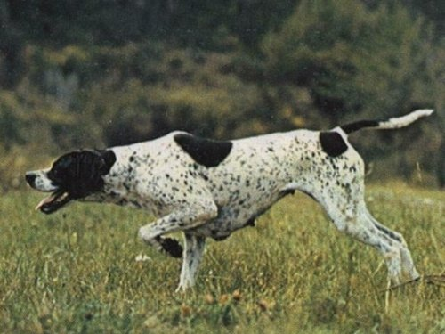

Здоровье собак
Любимый домашний питомец для большинства семей становится не просто зверушкой, а самым настоящим членом семьи, в особенности, если его растят в этом доме с самого рождения. Большинство людей к домашним животным относятся, как к малым детям, холят, лелеют, любят и уделяют массу сил и времени на их учебу и развитие, здесь и хорошее питание, и частый выгул собак, и постоянный уход. Но, к сожалению, нередко случается так, что собачка вдруг ни с того ни с сего впадает в уныние, перестает кушать, не веселится и не шалит. А вызванный ветеринар не находит ну совершенно никаких отклонений в здоровье малыша. Бедные собаководы в полной растерянности, пытаясь найти причину, таскают питомца по врачам и тоннами закупают витамины. И редко кто здесь допускает себе мысль, что малыш не заболел, а реально загрустил, то есть, вполне реально обиделся или расстроился. В чем искать причину такого поведения? И как избежать таких проблем с домашним любимцем?

Какие собаки охотничьи?
Собака – друг человека. Эта аксиома настолько не нуждается не нуждается в доказательствах, что кажется, будто так было всегда. Представить себе времена, когда четвероногий питомец не сопровождал хозяина в его походах, не охранял жилище и не помогал в добыче пищи, просто невозможно. А между тем, подобное происходило не так уж и давно. Ученые полагают, что человек одомашнил собаку «всего-то» 10-15 тыс. лет назад. В масштабе жизни конкретной личности – период, конечно, огромный, но для истории – всего лишь миг.
Миг, в течение которого, тем не менее, четвероногие питомцы претерпели серьезные изменения, эволюционировав в соответствии с требованиями окружающей среды и… своего хозяина. Да, да, невольно, а чаще все же вольно человек влиял на эволюцию собак, выводя новые породы, специально предназначенные для той или иной деятельности.